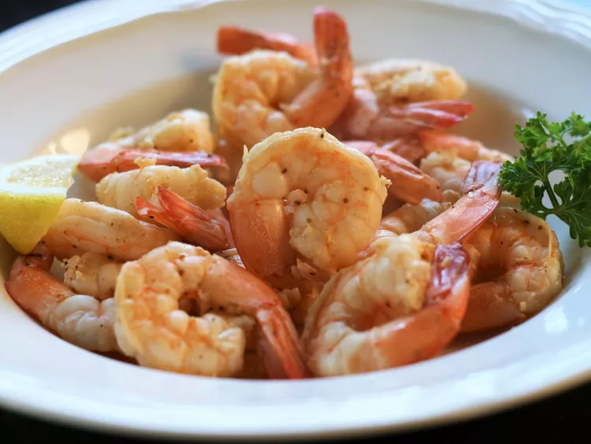

Steamed Shrimp

Description
Easy, spicy, steamed shrimp with Old Bay seasoning. Great for a super-quick dinner with a salad.
Ingredients
- ½ cup water
- ½ cup white vinegar
- 2 tablespoons seafood seasoning (such as Old Bay®)
- 1 pound fresh large shrimp, deveined with shells on
Steps
- Bring water, vinegar, and seafood seasoning to a boil in a saucepan over high heat. Add shrimp and stir.
- Reduce heat to medium, cover, and steam, stirring once or twice, until bright orange in color, 3 to 5 minutes. Drain.
Back to main page
Back to top